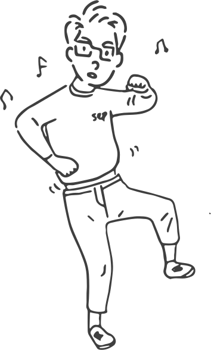
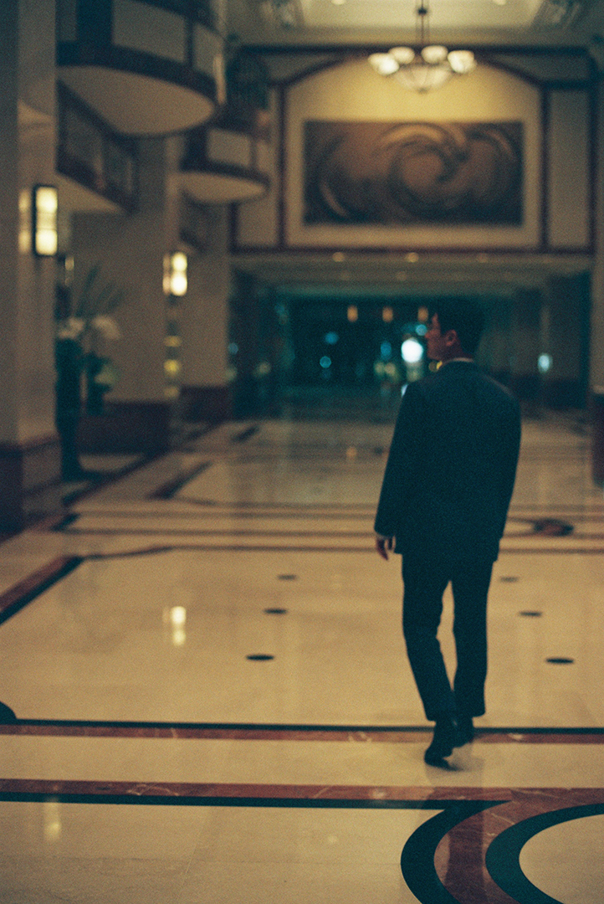

G-ARCH PROJECT

자기소개 뭐라고 해야하죠? 너무 오랜만이에요. 취업 할 때는 자기소개서 줄줄 외우잖아요. 그런데 현재의 나를 한 줄로 소개하는 게 진짜 힘든 것 같아요. 그래요. 간단하게 해보자면, 윤석열 나이로 32살이고 현재 부동산 사모펀드를 운용하는 펀드 매니저로 일하고 있는 YW라고 합니다.
제가 부동산 사모펀드, 이런 분야의 일을 잘 몰라요. 일단 무슨 일을 하는 지 궁금한데, 그 전에 형은 건축을 전공하고 다른 일을 하다가 지금 하는 부동산 쪽으로 간게 아니라 바로 부동산 쪽으로 갔잖아요. 어떤 계기가 있었나요?
저는 설계에 대한 애정이 그렇게 크지 않았어요. 보통 이제 건축학도들을 보면 전공선택, 전공필수부터 해서 교양들도 필수로 들어야 하는 과목이 진짜 많잖아요. 그런데 이런 상황에서 설계에 몰빵하는 친구들이 있고, 설계는 적당히 하고 이제 다른 과목에서 그냥 좋은 점수를 받자하는 친구들이 있죠.
들어보니 저는 좀 애매했던 거 같아요. 둘다 아닌…
저는 후자 쪽이었거든요. 일단 뭐 설계 공부는 재밌게 했어요. 근데 매 학기마다 프로젝트를 끌고 나가고 완성시키는 거에 대한 압박감이 너무 컸던 것 같아요. 컨셉부터 진짜 완벽하게 하고 계속 디벨롭을 해 나가고 싶은데 그게 내 마음대로 안 되잖아요 사실.
그렇죠 매 주차 해야하는 것들이 있으니까요. 누군 컨셉이 오래걸리는 사람이 있고, 누군 계획이 오래걸리기도 하지만, 그때 그때 해야하는게 어느정도는 있으니까…
어쨌든 학년이 올라가면서 조금 조금씩 나아지긴 했어요. 그렇지만, 나는 이게 잘 안 되는 사람인가, 하는 고민도 좀 많이 했었고요. 그러면서 졸업할 학년이 되니까 이걸 업으로 할 수 있을까에 대한 고민이 깊어졌어요. 그러면서 이 때가 되면 약간 파가 나뉘잖아요. 설계를 하는 친구들도 있고, 시공사나 공기업을 준비하는 친구들도 있고, 또 아예 완전 다른 분야로 취업하는 사람도 있었고요. 그런데 그 중에서 부동산 금융 쪽으로 취업 준비하는 친구들이 꽤 됐었어요.
맞아요, 보통 5학년 때 많이 진로에 따라서 갈리죠. 물론 5학년 졸업할 때까지 갈팡질팡 하는 친구들도 있고요, 저도 그랬고.
부동산 개발금융학회라고 있어요. 이게 우리 학과에서 만든 건 아니고, 통계학과랑 경제학과 애들끼리 만든건데, 2기 때 우리 학과 애가 회장을 한거에요. 그러면서 3,4기 때 약간 붐이 불게 된거죠. 그래서 나도 관심이 있는 분야기도 해서 설명을 들으러 갔는데, 뭔가 나한테 되게 잘 맞을 것 같다는 생각이 들었죠.
어떤 점에서 그런 생각이 들었을까요?
일단 제가 취업준비를 할 당시에 부동산 시장은 최근 각광받고 있는 대체투자 시장의 핵심투자처였고, 부동산 전문 인력에 대한 수요가 크게 증가하고 있을 때였어요. 당시 선배들의 얘기를 빌리자면 대학생들이 관심을 가지기 시작했다는 건 이미 이 시장은 레드오션이라는 건데, 건축학도인 제가 그 시장에 관심을 가졌다는걸 보면 말 다했죠.
부동산 금융업은 크게 부동산 개발하는 쪽이 있고, 실물 자산을 사고 파는 쪽이 있어요. 이렇게 크게 나뉘는데, 업무를 하는 데에 있어서 굉장히 많은 관계사들이 참여를 하는거죠. 투자자부터 시작해서 최종적으로는 설계사까지, 그 사이에 많은 협력업체가 있고요. 그들이 하나의 큰 프로젝트를 끌고 나가는 것이의미있고 재미있을 것 같다는 생각이 들었어요.
그러면 학회에서 부동산 금융 쪽으로 취업과 관련되어서 어떤 도움이 됐나요?
학회의 취지는 부동산 금융 쪽으로 취업을 하기 위한 학생들을 위해서 만들어 진거였어요. 부동산 금융은 이미 금융계에서 키 플레이어 중 하나로 인정받고 있지만, 대학에서 교육적으로 서포트 해줄 수 없었기에 만들어졌고, 학회 Founder들을 포함해서 현재의 운영진들이 고심해서 만든 커리큘럼으로 많은 선후배님들을 부동산금융시장의 핵심 인력들로 만들 수 있었죠. , 학회생활은 총 1년(두 학기) 과정이었어요. 첫 학기에는 주니어 기수로 부동산 투자시장과 투자기구, 부동산 금융의 다양한 플레이어들의 역할, 부동산 공법, 부동산 가치평가 등 다양한 주제에 대한 선배 기수들의 교육세션을 통해 향후 수행할 프로젝트에 필요한 기본적인 지식을 습득하게 됩니다. 이를 통해 습득한 지식을 총 2가지 실습을 통해 적용 해보게 되는데, 첫째는 실물자산거래시 물건의 적절한 가치를 산출해낼 수 있는 Valuation 실습이었어요. 서울의 주요 오피스 권역에 위치한 오피스 빌딩을 대상으로 해당 물건의 적절한 가치를 산출해내는 작업인데, 저는 을지로에 위치한 시그니쳐타워의 가치를 산출해보는 작업을 했었죠. 그리고 두번째는 IM제작이었어요. Information Memorandum이라고 해서 실무에서 가장 많이 작성하게 되는 투자제안서를 모의로 작성해보는 거였는데, 대상 물건에 대한 가치평가와 자금조달 구조 수립, 테넌트 유치 전략과 밸류애드 등 한 학기 동안 습득했던 모든 지식들을 종합적으로 활용할 수 있는 좋은 시간이었습니다. 시니어때는 멘토가 되어 주니어들 과제를 도와주며 상호 성장을 도모하는 그런 커리큘럼이었어요. 저는 학회활동을 통해 현업에 대해 많이 배웠고, 덕분에 또 졸업 후에 인턴도 하게 되면서 지금까지 커리어를 만드는데 있어서 가장 큰 도움이 되었다고 할 수 있겠네요.
그렇군요. 그럼 지금 실제로 하는 일은 어떤건가요?
저는 부동산투자를 전문으로 하는 자산운용사에서 일하고 있어요. 이미 설정된 펀드를 운용하면서 자산을 매각하기도 하고, 또 타 운용사에서 매각하는 자산을 매입해서 신규 펀드를 설정하는 일도 하고 있어요. 지금은 작년부터 계속되고 있는 부동산 금융 시장의 침체로 신규 물건 검토를 거의 못하고 있긴 해요.
생각보다 명쾌하고 단순하네요. 물론 그 중간에 많은 일들과 지난한 과정들이 있겠지만요.
맞아요. 펀드를 설정할 때 투자자들이 있어야 되잖아요. 그 투자자들도 자본을 어떻게든 운용을 해서 수익을 내야 하는거죠. 그냥 두는 게 아니라 굴려야 하는 거죠. 그리고 대출기관도 걸려있죠. 보통 펀드에 투자되는 수익자들의 돈과 대출받은 대출금을 합해서 부동산을 사니까요. 그러면 또 부동산을 사려면 아무거나 막 살 순 없으니까 부동산을 분석을 해야 하니까, 실사를 해야하죠. 그럼 감정평가도 받고. 중간에 임차사를 관리하고 중개하는 PM사도 있고요. 부동산 시설 관련 FM사도 있고, 그러니까 부동산 하나를 매입하기 위해서 굉장히 많은 회사들과 협력해서 일을 하고 있어요.
어느정도 머릿속에 프로세스가 잡히는거 같아요. 그런데 들어보면 전공인 건축과 큰 교차되는 지점이 있나 하는 생각이 들어요. 실제로 일하는 입장에서는 어떤가요?
건축학과에서 많이 배웠던 플래닝이라고 해야하나, 계획적인 부분은 사실 많이 안하고 있어요. 개발 프로젝트를 한다고 하면 토지부터 매입해서 거기에 건물을 올리고 프로그램은 어떤 걸로 하고 그런 건 이제 저희가 맨날 설계하던 거랑 맞닿아 있잖아요. 그래서 사실 개발을 하고 싶긴 해요.
지금 회사가 실물 자산 쪽만 하는거에요?
둘 다 하는데 제가 속해 있는 팀에서는 실물 자산만 하고 있어요.
옮겨갈 수는 있겠네요.
저희 팀에서도 개발할 수 있긴해요, 그런데 지금은 여력이 안돼서.
저도 회사를 다닐 때 제가 했던 프로젝트는 아닌데, 회사에서 그런 개발 프로젝트를 했었어요. 이제 아마 착공 들어가지 않을 까 하는데, 설계 과정이 꽤나 복잡하더라고요, 이해관계도 많고.
그런 프로젝트를 하면 설계사랑 컨택도 많이 하고, 설계에 의사결정권도 가질 수 있잖아요. 그래서 뭔가 좀 더 재밌게 할 수 있을 것 같은 마음이 있어요. 지금은 다 지어진 건물을 가지고 밸류애드를 하거나 지금 현 상태를 잘 유지해서 좋은 가격에 파는 정도니까 건축학과에서 공부할 때 느꼈던 그런 재미는 아무래도 적죠.
그러면 지금 회사에서 어떤 부분을 특히 만족하고 있어요? 지금 회사던 업종이던.
사실 설계를 기피했던 가장 큰 이유는 급여였어요. 설계 주니어로 일한다는 게 처우가 좋지 않다는 거를 익히 들어 알고 있었죠. 그러면서 나는 사실 돈을 많이 벌고 싶었기 때문에, 처음부터 뭔가 좀 설계는 조금 내 길이 아니라고 생각을 했어요.
큰 부분이죠. 저도 많이 고민하기도 했었고요.
저는 뭔가 빨리 안정된 삶을 원했던 것 같아요. 그러려면 어쨌든 빨리 좋은 직장을 구해야 되는거죠. 제 기준에 있어서 좋은 직장이라는건 적당한 워라벨과 취미생활을 많이 할 수 있는, 그 삶을 영위할 수 있는 정도의 급여를 받을 수 있는 곳이거든요. 그런데 그러다보니 뭔가 점점 더 정형화된 직장인이 되어가고 있는 느낌이에요.
그 느낌은 어떤거에요? 긍정적인/부정적인으로 둘로 나누는 게 좀 웃기긴 하지만요.
반반인 것 같아요. ‘대한민국에서 평균 정도로만 살자.’ 이런 말을 많이 하잖아요. 그런 평균에 가까워지는 삶을 살고 있다고 생각이 들다가도, 너무 남들이랑 너무 똑같은 삶을 그냥 살고 있는 게 아닐까? 내가 이걸 진짜 만족하고 있는 걸까? 내가 내 삶을 주체적으로 살고 있는 게 맞나? 약간 이런 고민이 들 때가 있어요..
저희가 오늘 본 건 오랜만이잖아요. 그런데 인스타로는 자주 보고 있으니까, 형은 너무 재밌게 살고 있다는 생각을 자주 했었어요. 인스타니깐 그런 모습이 더 크게 보이는 것도 있겠지만요. 아까 형이 말한 것 처럼 워라벨이 되게 중요하다고 했는데, 취미를 통해서 그런 부분을 많이 해소하는 듯 보였어요. 형을 내가 아는 만큼 얘기를 하면, 일단 춤이 있을 것이고, 요가하는 모습도 꽤 많이 본거 같아요.
작년 초 장기 연애가 끝나면서 좀 나 자신에 진짜 집중하는 시간을 가지려고 했어요. 그러다보니까 이것저것 많이 시도를 해봤죠.
춤은 그 전이었던 거 같아요. 제가 기억하기로는
맞아요, 춤을 처음 시작하게 된 계기는 첫 직장 1년차 때, 이때 어느정도 일도 손에 익었고, 이제 맨날 칼퇴도 하니까 저녁에 뭔가 할 게 없는거에요. 그래서 뭔가 재밌는 거 하고 싶은데 뭘 하지? 하다가 인스타 친구 중에 지금 춤 배우는 선생님이 레슨 하는 게 스토리에 많이 올라오는 거에요. 근데 되게 재밌어 보이더라고요. 그리고 무엇보다도 춤을 통해 커뮤니티가 형성되는 모습이 좋아보였어요.그래서 여기라면 좀 재밌게 할 수 있겠다 싶었어요.
저도 그 선생님 인스타 몇번 들어갔었어요, 형이랑 친해보이기도 하고, 이쪽인 거 같기도 해서 그랬죠.
제가 막 어릴 때부터 춤 동아리를 해보거나 춤을 따로 배워보거나 이런 적은 없어요. 그냥 걸그룹 나오면, 저 춤 되게 춰보고 싶다. 이런 생각만 했죠. 그런데 그냥 갑자기 어느 날 용기가 난거에요.
춤 춰보고 싶다라는 생각은 있지만, 또 막상 추는 내가 잘 상상이 안되기도 할텐데요.
맞아요. 그런데 그 때 보아의 BETTER가 나왔는데 노래가 너무 좋은거에요. 근데 마침 선생님이 곡 레슨을 연거죠.
운명이네요.
첫 수업을 딱 갔는데 뭔가 처음 온 사람이 저 밖에 없는 거에요 다들 고인물이고. 그리고 BETTER가 쉬운 안무가 아니잖아요. 그래서 뭔가 주눅이 좀 살짝 들긴 했지만 춤을 배운다는 것 그 자체가 진짜 너무 재밌었어요. 보통 첫 수업에 주눅이 들면 두 번째에 잘 안나온다고 해요. 근데 전 일단 몇 번 더 나가봤어요. 그러면서 다른 노래도 몇 곡 더 배우다보니까 거울 속에 있는 내 자신과 사랑에 빠지게 된거죠.
인스타 보면서 멋있기도 하고 부럽기도 했어요. 저도 춤을 보는 걸 정말 좋아하는데, 실제로 할 용기는 안났거든요.
내가 몰랐던 내가 진짜 좋아하는 걸 찾은 느낌 좋아하는 걸 하나 찾은 느낌이에요. 그리고 춤추기 전의 삶과 지금 삶이 너무 달라졌다고 느껴요. 춤추면서 성격도 많이 변했어요.
그렇군요. 아까 말했던 또 다른 취미가 운동이랑 요가가 있었죠?
운동은 출근 전 아침에 요가랑 점심에 F45라는 거를 해요. 크로스핏같은 운동인데 45분 동안 하는 고강도 인터벌 운동이에요. 아, 그리고 저녁에는 수영하고요.
제가 아는 사람중에 부지런한 사람 탑 파이브 안에 드는 거 같아요. 일 때문에 춤 수업을 못간다거나 운동을 못한다거나 그러진 않나요?
내가 그날 춤 수업을 가는 날인데 갑작스럽게 야근을 해서 레슨을 못 간다. 이런 적은 2년동안 두 번정도?
너무 좋네요. 그러고보니 전에 인도에서 요가했던 사진도 기억나요. 친구랑 같이 갔었던가요?
이 친구랑은 원래 그냥 인스타 친구였어요. 그런데 이 친구가 스토리로 자기 수능 날 아침 사진을 올린거에요. 근데 보니까 내가 나온 학교인거죠. 그래서 그 학교를 나왔냐 했더니 맞다고 하더라고요. 그래서 조금 더 접점이 생기니까 친해진거죠. 설 때 내려가서 학교 강당에서 만나자마자 연습해서 DITTO도 추고 그랬어요. 이 친구한테 좋은 영향을 많이 받았는데, 자유로운 영혼의 친구에요.
맞아요, 그 DITTO영상 생각나요. 나 형의 인스타를 꽤나 잘 보고 있나본데요? 정말 재밌어 보였어요.
다시 요가 얘기를 하자면, 제가 그 친구를 만났을 때 부산에서 요가원을 하고 있는거에요. 그런데 내적으로도 발전이 있어야 더 가르치는 데에 도움이 된다고 해서 인도에 요가수련을 받으러 간다는거에요. 그래서 저도 같이 가게 됐죠.
그럼 형도 인도에서 요가수련을 받으신거에요?
수련을 같이 가지 않았고, 수련 끝나고 같이 인도 여행을 했어요. 한 10일정도. 그 친구를 만나고 인도 여행을 계획하게되면서 요가를 시작했다고 보시면 돼요. 요가를 할 때는 온전히 나에 대해서 집중하는 시간을 좀 갖게 돼요.
내 몸 하나하나 감각을 최대한 끌어내서 하는 느낌인 거 같아요. 발가락 하나에 집중을 해보고 그러는 시간들이 있었던 거 같아요.
진짜 내 몸에 대해서 더 잘 이해할 수 있게 된 것 같아요. 그래서 요가는 평일에는 보통 출근하기 전에 해요. 아침에 사실 1시간 더 자면 좋긴 한데, 요가를 하고 출근을 하면 확실히 하루가 상쾌해져요.
부지런하다는 생각을 계속 하게 돼요. 형이 술을 별로 안좋아하잖아요, 그래서 좀 더 가능한 거 같기도 하고요. 그러고보면 다 그런 건 아니지만, 이쪽 모임들이 술 마시는 게 좀 많은 편이라고 생각이 들거든요. 물론 저는 술을 좋아하니깐 그렇게 더 보이는 거 같기도 하지만요. 그런데 술을 별로 안좋아하는 입장에서 이쪽생활을 할 때 좀 어렵거나 불편한 게 있나요?
저는 뭐 술을 안 좋아하긴 하는데, 분위기는 좋아해서 그냥 적당히 맞춰서는 먹는 편이에요. 아예 못 먹진 않아가지고.
주변 친구들도 많이 먹진 않는 거 같아요. 이쪽 생활을 한건 언제부터였어요? 아니면 처음 내가 게이라는 걸 알았을 때?
진짜 어릴 때부터 자각을 하고 있었어요. 그러다가 중학교 때 제일 친하게 지낸 5명이 있었어요. 다섯명이서 늘 붙어다녀서 학교에서 약간 여걸파이브로 불렸단말이에요
여걸파이브중에 누구에요
저는 강수정이었어요. 아나운서가 꿈이기도 했고.
형이 좀 우아한 느낌이 있긴 하죠.(웃음)
어쨌든, 고등학교 때 뿔뿔이 흩어졌는데, 어느날 밤에 갑자기 이 여걸파이브중에 한명이 ‘너 얘 어떻게 알아?’ 하는거에요. 그 애가 싸이월드에서 되게 유명한 게이였거든요. 그래서 그 친구 덕분에(?)서로 커밍아웃을 하게 된거죠. 그런데 알고봤더니 이 5명이 다 게이였다. 라는 이야기입니다. 그렇게 첫 커밍아웃을 하지 않았을까?
학창시절에 친하게 지냈던 친구가 게이였다. 이건 약간 흔한 스토리긴 한데 5명이라니까 또 새롭네요.
그리고 고등학교에 올라갔는데 고등학교 때 첫 연애를 했어요. 제가 기숙사 생활을 했거든요.
어머어머, 지금 저 너무 BL 이야기 뚝딱인데요, 기숙사라는 것에서 부터.
기숙사 생활을 했는데, 고등학교 때 CA를 하잖아요? 저흰 CA별로 연말에 축제때 공연이나 전시를 하는데 제가 영어연극부라는 곳에 들어갔어요. 그런데 같이 합격을 한 동기 한명이 바로 옆 반이었거든요. 기숙사 방도 건너편인가 그랬어요. 얘가 이쪽이라는 어떤 단서는 전혀 못 느꼈는데, 아무래도 연습을 하다보니까 친해지죠. 그러다보니 CA 연습하고 그날 밤에 걔랑 같이 자고, 그러는 횟수가 잦아지다 보니까 어느 날 갑자기 같은 침대에서 자다가 하게 된거에요.
친해지면 원래 같이 자고 또 하고 그런가요? 난 왜 안그랬지? 일단 계속 얘기해봐요, 지금 너무 설레니까.
이제 다음 날 아침에 기숙사에서 나와서 아침 먹으려고 줄을 서는데 그날부터 뭔가 이제 1일이 된 거죠. 그렇게 3년을 잘 사귀고, 어쩌다보니 또 둘다 재수를 하면서 대학도 서로 떨어진 곳으로 가고 하면서 마무리가 됐죠. 그게 저의 첫 연애였어요.
트위터 청게(청소년 게이)썰 보는 거 같기도 하고, BL을 본 거 같기도 하고 그러네요. 그럼 지금 친구들은 서울에서 만나는 친구들은 어떻게 알게 된거에요?
일단 내가 서울 와가지고 이쪽 활동을 한 거는 크게 세 개인데, 처음에는 대학에 있는 퀴어 동아리에 들어갔어요. 그래서 군대 가기 전에는 동아리 활동을 좀 했고, 그래서 그 때 알고 지낸 형 동생 몇 명이랑은 자주 보진 않아도 한 번씩 연락하고 밥먹고 그런 사이가 됐고, 군대 전역하고는 이쪽활동을 거의 하지 않았어요.
왜요? 보통은 군대갔다와서 더 하고 그러지 않나요.
왜냐하면 학교 생활하기가 너무 바빴기 때문에 그랬던 거같아요. 그때 진짜 뭐 하고 지냈지? 그때는 뭔가연애도 잘 안 됐고 그냥 학교 생활만 열심히 했던 것 같아요. 그러다가 이제 내가 제일 오래 연애를 했던 애인을 만났는데, 그 형은 자기 또래 친구들이 되게 많았어요. 동갑 모임도 하고, 게임 모임도 하고 그러면서 항상 같이 놀러 다니는 친구들이 있었단 말이에요. 근데 당시에는 전 그런 모임들이 없다보니까, 이곳 저곳 추천을 많이 해줬어요. 그 중에 하나가 지아키였고, 그러면서 들어오게 된거죠.
이것도 조금 의외인 점이네요. 이쪽활동을 엄청 많이 할 것 같다는 얘기는 아니고, 뭔가 항상 팬시하게 ‘게이’스럽게 살고 있다고 생각해서 이쪽활동을 안하던 시기가 별로 상상이 잘 안되는 거 같아요. 집에 친구들도 초대해서 팬시하게 놀고 그러잖아요. 그래서 말인데, 집에 대해서 얘기하고 싶어요. 집도 굉장히 뭐랄까, 인스타그래머블하다고 해야할까요? 그리고 유지를 계속 하는것도 부러워요.
지금 집에 이사한 지 한 2년정도 된거 같아요. 이 집으로 이사하기 전까지는 계속 원룸에만 살았었어요. 그런데 이제 직장생활을 하다 보니까 이제 퇴근하고 집에서만큼은 진짜 힐링하고 잘 쉬고 싶은거죠. 그런데 대학교 때 처음 서울 상경해서 지금까지 계속 내가 몸 담았던 공간은 음, 그러니까 더 이상의 안락함이 안 느껴진다는 느낌을 받았어요. 뭔가 좀 더 넓은 공간이 필요한거죠.
그렇죠, 살다보면 뭐 짐도 늘어나고, 살림도 늘어나고요.
짐도 늘어나고 살림도 계속 늘고, 그리고 나는 어쨌든 삶에 대한 무게가 점점 커지는데 내가 온전히 내 공간이라고 할 수 있는 공간은 점점 더 좁아지는 느낌. 그래서 뭔가 좀 더 넓은 집으로 이사야겠다. 그런거죠. 그런데 저는 거기에 또 층고에 대한 열망이 있어요
높은 층고의 공간.
제가 감당할 수 있는 그 금액 선에서 층고를 높이려면 복층밖에 선택지가 없는거죠.
그쵸, 갑자기 저택을 살 순 없으니까요.(웃음)
복층을 안 살아봐서 불편하다는 말도 많지만 그걸 감수하고서라도 한번 살아보자. 이렇게 해서 복층집으로 이사를 하게 됐어요. 너무 지금 만족스러운 게 일단 공간 분리가 확실히 되고 그러고 일단 그 수납도 되게 잘 돼 있어서 쏙쏙 잘 넣으면 깔끔하게 유지할 수 있고 그렇습니다.
그러면 나중에 살고 싶은 집에 대한 모습이 더 있을까요?
아무래도 사랑하는 사람과 함께 사는 집이겠지요? 저는 어릴 때부터 하와이 정착에 대한 로망이 있었어요. 구체적으로 계획하고 있는 건 없지만, 막연한 꿈 같은 거죠. 그래서 상상할 때마다 더 좋은거같아요. 지금 만나고 있는 분과 언제가 될지는 모르겠지만 하와이에서 같이 작은 도넛가게 하면서 아침에는 같이 해변산책하고, 저녁에는 서로의 춤과 노래로 웃음이 가득한. 생각만해도 행복하네요. 이달의 지아키, 그 후 20년.. 회고 인터뷰 하와이편에서 뵐 수 있기를 희망합니다.
인터뷰 진행 및 사진 : 정민 일러스트 : O